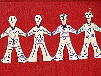
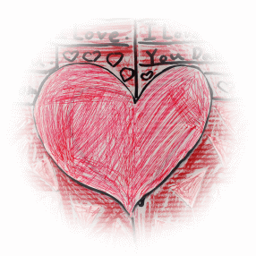

-
感謝Lily出生，作我們的女兒，讓我們有幸照顧她,愛謢她！
-
感謝快樂瑪麗安Cindy老師三年的呵護照顧，在我們家為她舉辦個人畢業典禮。
-
感謝馬偕醫院梁德城主任、陳淑惠醫師、劉希哲醫師及小兒血液腫瘤醫療團隊的悉心治療，三年來辛勞地為救助庭煒奔波努力。
-
感謝力行國小郭淑珍老師的特別關懷，讓Lily在短暫的上學日子裡，留下人生最美好的回憶！
-
感謝彩繪精靈薛幼春老師教導Lily畫畫，在畫室給她最快樂的時光！
-
感謝台北市教育局床邊巡迴輔導老師吳秋美老師在Lily最沉痛的治療在病床邊的引導，使她的病床生活多彩多姿，充滿期待與喜樂。
-
感謝馬偕醫院林美玲與其他院牧部阿姨們經常來陪伴Lily，唱詩歌給Lily聽，給她信心與依靠。
-
感謝馬偕醫院與台北市雙園特教資源中心暨床邊巡迴輔導老師為庭煒舉辦個人感恩畫展，報紙及電視媒體的報導讓庭煒樂不可支。
-
感恩台北市教育局第五科樊有譽科長與雙園特教資源中心李月卿主任鼎力相助與提供展畫的畫框、人力物力，讓Lily的畫有機會到各小學巡迴展出。
-
感謝馬偕醫院十二樓的護理長陳琇惠阿姨總在Lily最需要、最困難的時候充當她打針的救火員，讓庭煒免去打針恐懼！
-
感謝馬偕醫院十二及十三樓的護士阿姨們的愛心與耐心的照顧，醫院成了Lily第二個家！

- 感謝
- 威爾姆氏腫瘤
- 認識兒童癌症
- 威爾姆氏腫瘤相關網站
-
生命教育參考資訊
- 生命教育教學方案分享
- 意見交流
-
感謝喜願協會經常的問候與關心，努力地想要為Lily完成她的夢想。
-
感謝美國The National Wilm's Tumor Study Group (NWTSG) Dr. Malogolowkin, Marcio的仗義幫忙，提供資訊協助救助Lily。
-
感謝伯大尼育幼院的趙立勝所長與老師們對庭煒的照顧，讓庭煒在幼稚園大班時仍能快樂與自在地與妹妹一起上學。
-
感謝新生命教會顧其芸牧師在Lily第一次病危時親至病房為她受洗，帶給她無限的盼望，與教會的弟兄姊妹圓滿地幫忙所有安息禮拜的事、為庭煒獻唱她喜愛的詩歌。
-
感謝聚會所的藍雁、燕景等弟兄姊妹為Lily不段的代禱與幫助，為Lily打氣加油。
-
感謝同學、朋友、同事與家人經常地的伸出援手、不斷的支持與幫忙，陪伴我們一家走過人生最陰霾的三年。
-
感謝台北市力行國小、國語實小…等十所小學舉辦生命教育畫展，小朋友與老師來信讓庭煒在辛苦治療過程中倍感溫暖。
-
感謝周大觀文教基金會對Lily抗癌精神的肯定，讓Lily的故事有機會與更多的人分享。
-
感謝台北市教育局床邊巡迴輔導老師沈易達老師的付出，為Lily的故事製作精美的抗癌故事光碟。
-
感謝陳建宇同學為Lily建構精彩的網站，讓她的故事可以繼續傳揚與幫助更多的人。
九年前，上帝在我們學業將結束時，於美國紐約州雪城賜給我們一位人見人愛、活潑天真、聰明乖巧的小天使─Lily。Lily她學東西特別快速，１０個月大，便學會走路及使用筷子吃飯。上幼稚園時，遇到一位很喜愛小孩的Cindy老師，對她更是呵護備數。她兩歲半便上小班，比同班的同學少半歲，但因她長得特別高大，倒與同學相處融洽；且因她善體人意，也樂於幫助別人，故幼稚園的同學都喜歡與她做好朋友。唯上帝的試練從大班下學期開始，快接近畢業時，於1999年6月15日發現血尿現象。經歷彰基、萬芳及三總折騰後，獲得郭雲鼎醫師及吾友鄭守夏之協助，轉診至台北馬偕醫院，並得到全台灣最好的血液腫瘤醫師群－梁德城主任、 陳淑惠醫師及劉希哲醫師悉心的照顧，她因無法參加幼稚園的畢業典禮，故Cindy老師特別在我們家為她個人舉辦畢業典禮。力行國小的郭老師在庭煒抵抗力稍好到校上 課時，也盡力幫助她，像有小朋友生病，幫她整調位置，讓她不被傳染。 因庭煒不能上體育課，便徵求班上所有同學同意調整課程，讓她能安心上課。小學若有任何活動，郭老師都會打電話詢問庭煒是否能參加。Lily只要身體體力能夠負荷，都非常高興的參加，像郭元益餅店之旅等。
因住院的時間越來越多，Lily接觸到一位上帝差派來讓她在病塌中能得到快樂的使者－吳老師。吳老師是專門負責教導醫院的重症病童，常常別出心裁的帶來很多好玩又富教育的手工藝勞作，讓Lily能在病床上一邊玩、一邊學。吳老師更與院牧 部林美玲阿姨為庭煒舉辦了一個人畫展，得到報紙及電視媒體的報導，讓庭煒樂不可支。
特別要感謝啟發她畫畫的薛老師。Lily若沒住院而身體稍有體力時，她一星期中最盼望的日子便是星期五晚上，因為她非常喜歡去跟薛老師學畫畫，她也很喜歡薛老師所飼養的貓咪，晚上7:30才開始的課程，她總是第一個要到畫室去，常在6:45便到，那時，畫室沒人，她便在外面等，直到老師出現為止。她的畫風受薛老師影響最深。
喜願協會本來安排去年５月底讓Lily達成她的心願，到美國Disney Land一趟，可惜Lily的腫瘤野馬，使她腹水充突然如脫韁滿
腹，腔影響心跳及呼吸。醫生告知Lily隨時有性命危險，病情已無法控制，但天無絕人之路，主又讓我們透過Internet找到Wilms Tumor Lommittee member : Malogolowkin, Marcio的義務幫助診斷，與馬偕醫院三位譽滿杏林的醫生一起合作治療，Lily的險峻病情，終於渡過難關。然在去年九月又爆發另一波腹常危機，也是在梁德成所領導的醫師群與Dr.MM的協助下兩次 逃離主的呼召，在馬偕醫院舊大樓１３樓及１２樓的護士們悉心照護下，Lily雖然手腳的血管都已硬化，體力也越來越差，但護士們總是笑口常開鼓勵Lily要堅強、勇敢的接受挑戰。特別是怡君阿姨，放假抽空陪Lily到海邊抓螃蟹，讓她非常快樂。１２樓的護理長總是她指定要幫她打點滴的救火員。在患病治療的三年多�堙A我們看到梁伯伯，陳阿姨及劉叔叔三位醫師努力不懈的幫Lily治病，讓我們非常的感動與感恩。護士們的細心照料也銘記在我們的心中。但還有很多媽媽的同事及 爸爸的同事朋友、同學，不論是國內或國外的，都常常來電或來email關心，或代禱。讓天空交織著為她代禱的力量。
此外要感謝同學Ellen，於去年１０月請假兩週從美國來台看她，還帶著她的寶貝兒子Bean同行，她倆天天來醫院為Lily打氣加油，令我們萬分的感念。不過，再值得一提的是一個素未謀面，而主動義務協助治療Lily的醫生Dr.MM，更是令人打從心底感謝。這些幫助Lily的使者，都是上帝所差派的。
最後，爸爸媽媽工作上的同仁，更是不停的從旁加油打氣，爸爸的上官董事長、校長、館長、館內同仁及各級長官和共同科的同仁，及媽媽的同事，協助及鼓勵從不間斷，他們都是我們動力的泉源，更是庭煒最大的支柱。
感謝所有曾經幫助過庭煒的任何人！